01
Lo piensas demasiado
Ensayas la frase en tu cabeza y, cuando llega tu turno, la conversación ya cambió.
Elocuencia sin miedo es un libro práctico para ordenar tus ideas, expresarlas con precisión y hablar con más seguridad en las conversaciones que realmente importan.
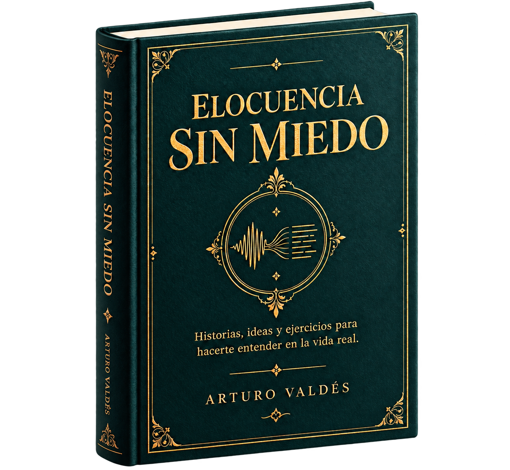
A veces no te falta personalidad ni conocimiento. Te falta una forma de ordenar la idea y llevarla a la conversación sin perderte en el camino.
Ensayas la frase en tu cabeza y, cuando llega tu turno, la conversación ya cambió.
Explicas tanto contexto que la idea importante termina escondida entre detalles.
Sales pensando: “Eso no era lo que quería decir”. Y la próxima vez vuelves a dudar.
La elocuencia no consiste en usar palabras difíciles. Consiste en conseguir que una buena idea llegue con claridad a otra persona.
Un recorrido práctico para observar lo que ocurre cuando hablas, ordenar lo que quieres decir y convertirlo en algo que puedas aplicar.
Reconoce qué ocurre cuando una conversación se complica y aprende a escucharte.
Encuentra la idea que quieres compartir y el propósito real de decirla.
Prueba ejemplos, pausas, preguntas y formas más claras de explicar.
Llévalo a reuniones, propuestas, límites, entrevistas y conversaciones reales.
Si sabes lo que quieres decir, pero al hablar te enredas, das demasiadas vueltas o no consigues expresar la idea como la tienes en la cabeza, aquí empieza el cambio.
Elocuencia sin miedo es una guía práctica para ordenar lo que piensas y expresarlo con más claridad, precisión y seguridad.
Dentro encontrarás ideas, ejemplos y ejercicios para que hablar mejor deje de sentirse como algo que tienes que improvisar y empiece a convertirse en una habilidad que puedes entrenar.
Arrastra, usa las flechas del teclado o los controles para explorar el comienzo del libro.
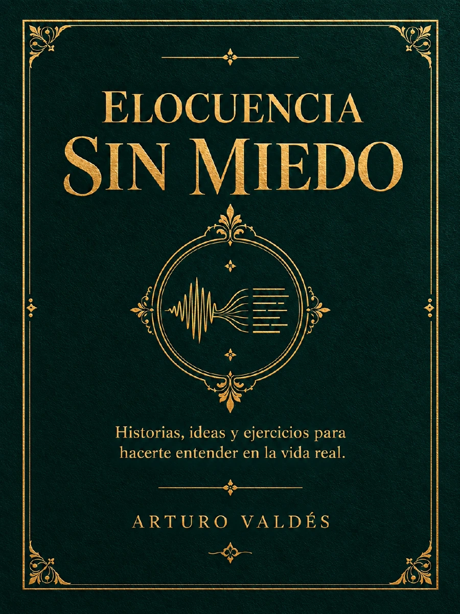
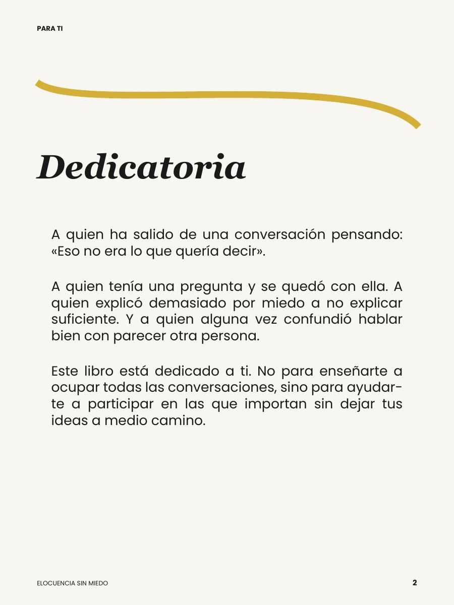

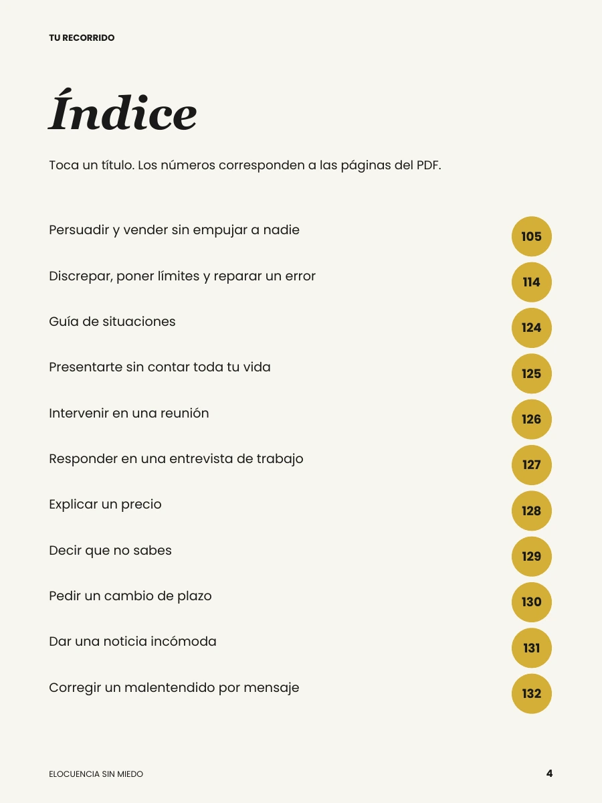
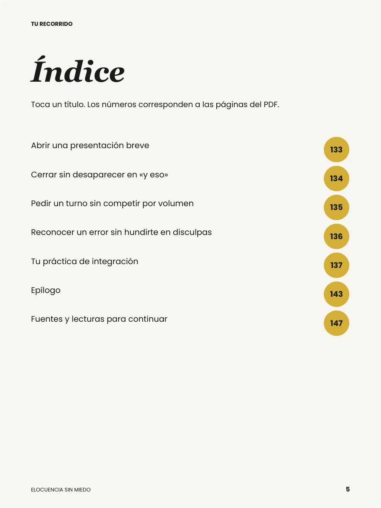
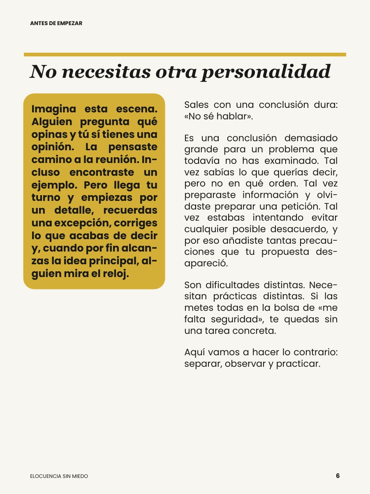
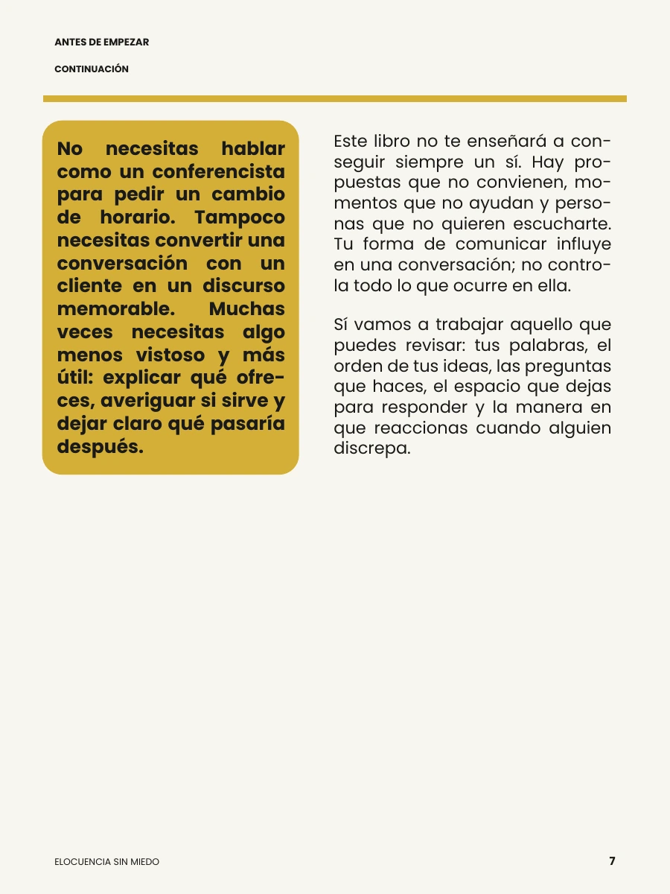
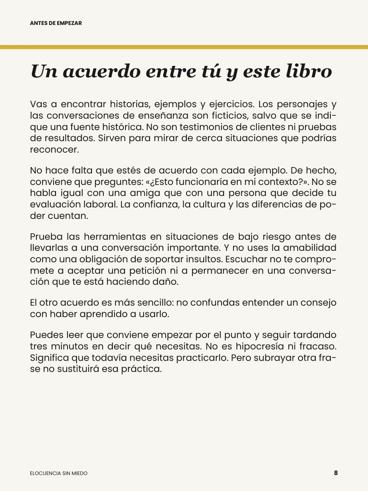
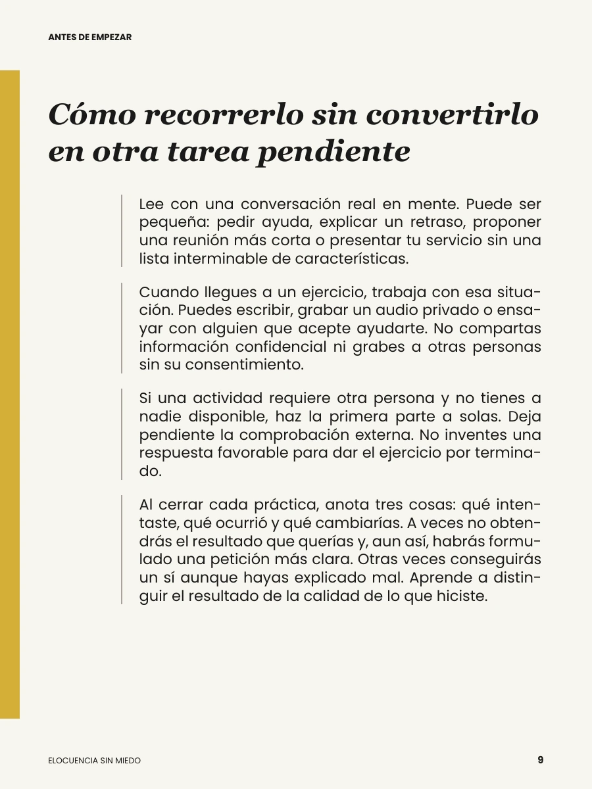
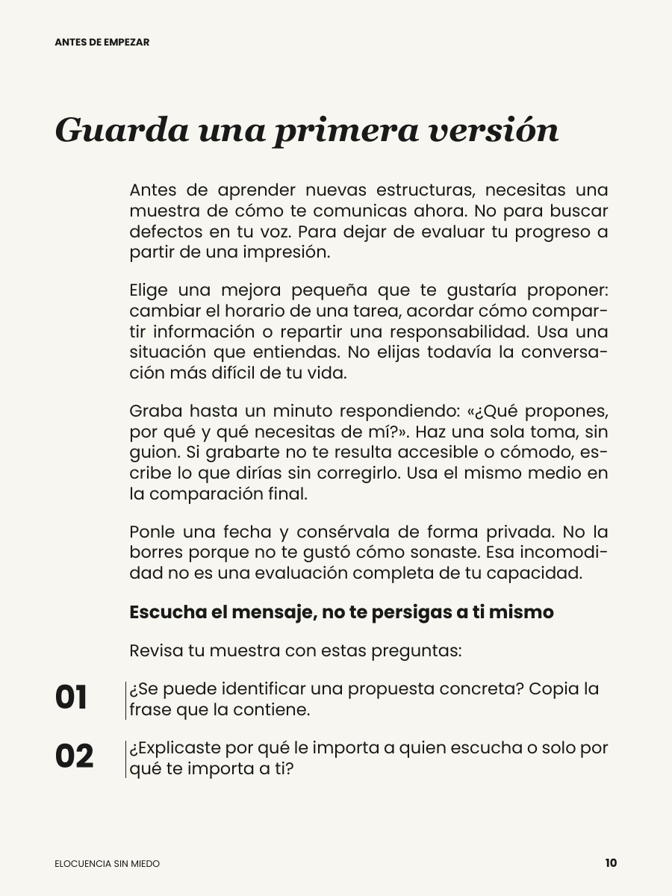
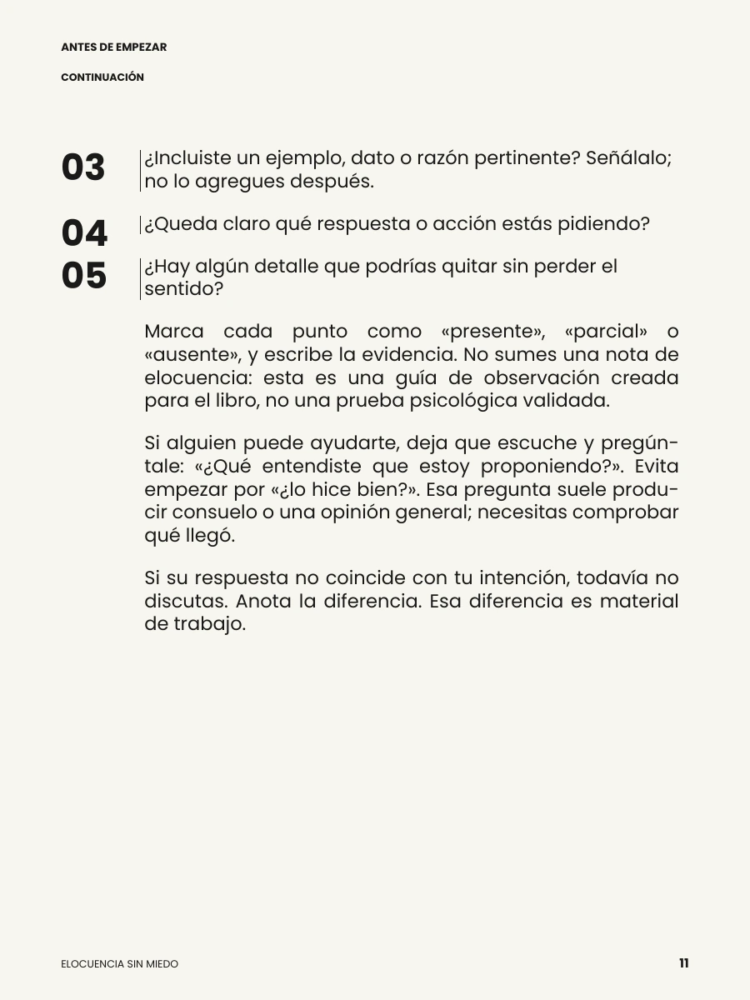
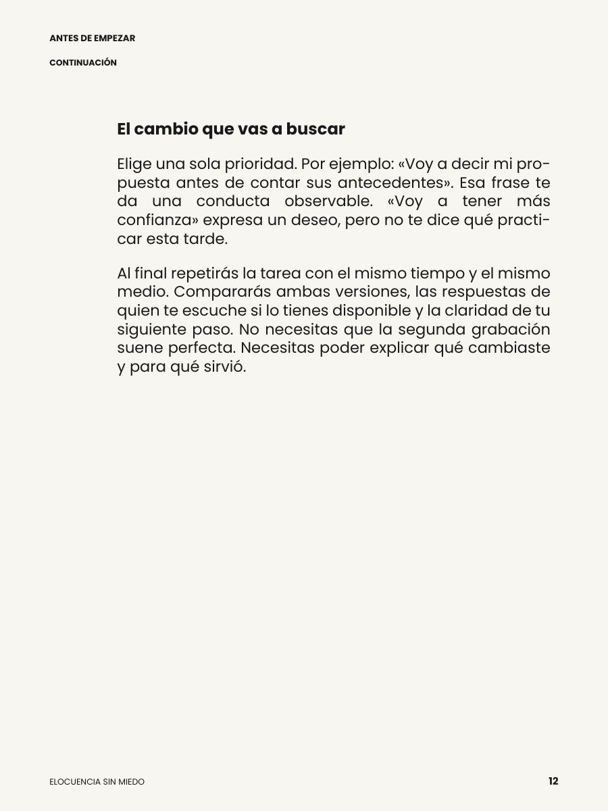
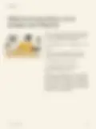
Ya viste cómo empieza. El resto del recorrido está en el ebook completo.
Quiero hablar con claridad ↗Desliza para explorar. Toca una página para ampliarla.
No está pensado para que subrayes frases bonitas y lo olvides. Está pensado para volver a él cuando tengas una conversación concreta que quieras mejorar.
Situaciones cotidianas para entender qué ayuda a que una idea llegue y qué la hace perderse.
Preguntas para separar lo que realmente quieres decir de los rodeos que lo tapan.
Propuestas para ensayar, escucharte y revisar una conversación real.
Trabajo, reuniones, entrevistas, límites, propuestas, desacuerdos y conversaciones difíciles.
La diferencia no es convertirte en otra persona. Es aprender a encontrar, ordenar y expresar la idea.
Experiencias que hablan de claridad, seguridad y de poder llevar las ideas a conversaciones reales.
Demo educativa: los testimonios y retratos son ficticios e ilustrativos; no son reseñas verificadas.
Qué libro tan brutal. La verdad no pensé que me fuera a servir tanto, pero desde que lo empecé a leer he notado un cambio real en la forma en la que me expreso. Ahora me siento mucho más seguro hablando en público y en mi trabajo. Súper recomendado.

Amooo este libro! De verdad me ha ayudado un montón a perder el miedo de hablar y a organizar mejor mis ideas. Los ejercicios son muy prácticos y fáciles de aplicar. Ya no me trabo tanto cuando tengo que presentar en la universidad. Me encantó.

Excelente contenido. Me gustó mucho que no se queda solo en teoría, sino que da herramientas reales para el día a día. Lo he aplicado en reuniones de trabajo y he recibido comentarios muy positivos sobre mi forma de comunicar. Vale totalmente la pena.
No soy de leer muchos libros, pero este sí me atrapó. Está escrito de forma sencilla, se entiende fácil y está lleno de ejemplos útiles. Me ha servido un montón para expresarme mejor en mi vida personal también. Lo súper recomiendo!
En el café me toca repetir el menú mil veces. Antes sentía que sonaba apurada; ahora respiro y hago pausas. Todavía me trabo con algunos nombres, pero ya no me da tanta pena.

Yo tenía las ideas... pero en reunión me daba miedo interrumpir. Estoy ensayando una frase corta y ya. Me falta, sí, pero me sirve.

Leo en el bus a ratitos. Me gustan los ejemplos porque no suenan a discurso de político jaja.
Cuando presento algo en el grupo, se me va el aire. Practiqué el ejercicio de respirar y me acuerdo de aflojar los hombros. No soy experta, pero voy más tranquila.

Llevo años atendiendo gente en el taller. Me quedé con lo de escuchar antes de responder; me baja un poco las revoluciones cuando alguien llega molesto.

Me dio risa leer en voz alta sola en casa, pero bueno, nadie estaba mirando 😅. Repetí una frase y ya no la digo como robot.
Haber si algún día logro hablar sin irme por las ramas 🙈. Por ahora estoy practicando cerrar una idea antes de saltar a la otra.
En el centro cultural me invitaron a presentar el grupo y dije que sí antes de pensarlo mucho. Me llevé dos ideas apuntadas; con eso ya sentí piso.
Una herramienta práctica para volver a tus conversaciones reales y trabajar la forma en que expresas lo que piensas.
Acceso inmediato a tu correo electrónico
Precio final del producto. Pueden aplicar impuestos según país.
QUIERO ELOQUENCIA SIN MIEDO ↗Compra procesada de forma segura por Hotmart.
Es un ebook digital en PDF de 156 páginas. Está diseñado para leer, practicar y volver a situaciones concretas de comunicación.
No. El recorrido parte de conversaciones cotidianas y avanza hacia situaciones como reuniones, entrevistas, propuestas, límites y respuestas difíciles.
El ebook digital en PDF de 156 páginas, con acceso inmediato a tu correo electrónico. El pago se procesa mediante Hotmart.
Sí. Al ser un PDF digital puedes leerlo desde computador, tablet o teléfono.
El contenido combina escenas, ejemplos, preguntas y prácticas para aplicar lo trabajado a conversaciones reales.
La oferta actual incluye 7 días de garantía.
Empieza con una conversación real. Lee, practica y descubre una forma más clara de expresar lo que piensas.
QUIERO HABLAR CON CLARIDAD ↗